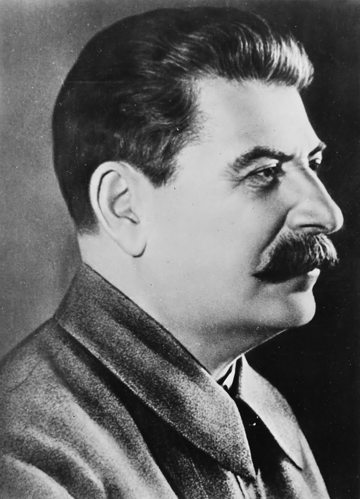

Iósif Stalin
Iósif Vissariónovich Dzhugashvili, más conocido como Iósif Stalin (Gori, 18 de diciembre de 1878 - Moscú, 5 de marzo de 1953), fue un político, revolucionario y dictador soviético, secretario general del Comité Central del Partido Comunista de la Unión Soviética entre 1922 y 1952, y presidente del Consejo de Ministros de la Unión Soviética entre 1941 y 1953. Aunque inicialmente presidía un liderazgo colectivo como primero entre iguales, con Kameniev y Zinoyev, a los que ejecutó posteriormente, hacia los años 30 ya se había convertido en dictador de facto de la Unión Soviética.
Estuvo entre los bolcheviques revolucionarios que impulsaron la Revolución de Octubre en Rusia en 1917 y más tarde ocupó la posición de secretario general del Comité Central del Partido Comunista de la Unión Soviética desde 1922 hasta que el cargo fue formalmente suprimido en 1952, poco antes de su muerte. En mayo de 1924, después del XII Congreso del Partido Comunista de la Unión Soviética, Stalin pidió que se le permitiera dejar el cargo. Esta petición fue rechazada unánimemente, incluyendo a sus detractores. Volvió a formular esta petición tres veces más, en 1926, 1927 y 1952; las tres fueron rechazadas y tuvo que permanecer en el cargo.
Mientras que el cargo de secretario general era oficialmente electivo y no se lo consideraba como la máxima posición dentro del Estado soviético, Stalin logró utilizarlo para acaparar cada vez más poder en sus manos tras la muerte de Vladímir Lenin en 1924 y para sofocar gradualmente a todos los grupos opositores dentro del Partido Comunista. Esto incluyó a León Trotski, un teórico socialista y el principal crítico de Stalin entre los primeros líderes soviéticos, que fue primero desterrado de la Unión Soviética en 1929 y luego asesinado en México en 1940 por orden de Stalin. En tanto que Trotski fue un exponente de la revolución mundial, fue el concepto de Stalin de socialismo en un solo país el que se convirtió en principal enfoque de la política soviética.
En 1928, Stalin reemplazó la Nueva Política Económica de la década de 1920 por una economía planificada muy centralizada y por planes quinquenales que iniciaron un período de rápida industrialización y de colectivización económica en el campo. Como resultado, la Unión Soviética pasó de ser una sociedad mayoritariamente agraria a una gran potencia industrial, siendo ésta la base de su aparición como segunda mayor economía del mundo después de la Segunda Guerra Mundial. Como resultado de los rápidos cambios económicos, sociales y políticos de la época estalinista, millones de personas fueron enviadas a campos de trabajo del Gulag como castigo, y millones fueron deportadas y exiliadas a zonas remotas de la Unión Soviética. La agitación inicial en el sector agrícola interrumpió la producción de alimentos en la década de 1930 y contribuyó a la catastrófica hambruna soviética de 1932-1933. En 1937, una campaña contra supuestos enemigos de su gobierno culminó en la Gran Purga, un período de represión masiva en el que cientos de miles de personas fueron ejecutadas, e incluso fueron condenados líderes del Ejército Rojo acusados de participar en complóts para derrocar el gobierno soviético.
Primeros años
La relación de Stalin con el movimiento revolucionario comenzó en el seminario. Durante estos años de escuela, Stalin se unió a la organización socialdemócrata de Georgia, en la que fue instruido en política marxista por el profesor Noe Zhordania (quien después sería Jefe de Gobierno de la República Democrática de Georgia) y comenzó a difundir el marxismo. Fue un responsable del sindicato de Georgia durante tres años y luego portavoz del nuevo partido marxista georgiano. Algunas fuentes afirman que Iósif abandonó el seminario en 1899 justo antes de sus exámenes finales; según otras biografías, fue expulsado.
Inicia su militancia en torno al círculo de obreros ferroviarios de Tiflis, alejándose definitivamente de Zhordania, y a cercándose al grupo de izquierdas del Messame Dasi. Comienza a ganarse la vida en un inicio dando clases, para posteriormente trabajar en un observatorio de Tiflis.
Junto a otros jóvenes intenta editar un periódico propio clandestino, sin lograrlo. Solamente editaron octavillas que reparten en las fábricas, con claro contenido político. El Primero de Mayo de 1900 organiza la primera manifestación de masas, reuniendo a 500 obreros en los alrededores de Tiflis con banderas rojas y retratos de Marx y Engels.
En agosto de 1900, entra en contacto con Víktor Kurnatovski, uno de los iskristas que envía Lenin a Tiflis para impulsar la difusión del periódico que debía conducir a la reorganización del Partido y a la lucha contra las tendencias economicistas y conciliadoras. Kurnatovski les enseñó a aquellos jóvenes georgianos cómo montar una imprenta clandestina y les propuso que lo hicieran en Bakú, un fuerte centro proletario, mejor que en Tiflis. En marzo de 1901, Kurnatovski es detenido junto con otros militantes, pero Koba Dzhugashvili se libra de la redada, aunque su vivienda y su lugar de trabajo en el observatorio meteorológico fue registrada por la Ojrana, la sección especial de la policía zarista dedicada a la represión política. Tiene que pasar a la clandestinidad, de la que ya no saldrá hasta la Revolución de 1917.
En 1901, el clérigo georgiano M. Kelendzheridze escribió un libro educacional sobre lengua y arte, incluyendo uno de los poemas de Stalin firmado como «Soselo». En 1907, el mismo editor publicó Antología georgiana, o Colección de los mejores ejemplos de literatura georgiana, donde incluía un poema de Stalin dedicado a Rafael Eristavi. Su poesía aún puede ser vista en el museo Stalin de Gori.
Trabajó durante diez años con los movimientos políticos clandestinos en el Cáucaso, sufriendo repetidos arrestos y exilio a Siberia, entre 1902 y 1917.
Vida política
Ascenso al poder
En 1912, Lenin tuvo la intención de proponer la elección de Stalin al Comité Central bolchevique en la Conferencia del Partido en Praga, pero desistió al encontrarse con la resistencia del partido. Sin embargo, inmediatamente después, Stalin fue sumado al Comité Central por «cooptación» (potestad prevista por los estatutos, que reservaba para el Comité Central el derecho a sumar integrantes que no hubieran sido electos por el Congreso del Partido).
En 1917, Stalin era el editor de Pravda, el diario oficial del partido, mientras Lenin y gran parte del liderazgo bolchevique estaban en el exilio. Después de la Revolución de Febrero, Stalin y el equipo editorial tomó una posición favorable al gobierno provisional de Kérenski y se sostiene que llegó al extremo de negarse a publicar artículos de Lenin que llamaban al derrocamiento del gobierno provisional.
En abril de 1917, Stalin fue por primera vez electo por la base del partido para formar parte del Comité Central, obteniendo la tercera más alta mayoría de votos en la Conferencia de Petrogrado (detrás de Lenin y Zinóviev). Posteriormente fue nombrado secretario del Politburó del Comité Central (mayo de 1917); se mantuvo en este cargo por el resto de su vida. Al finalizar julio presentó el informe central al VI Congreso del partido, en el cual se optó por la insurrección contra el gobierno provisional.
Según diversas fuentes, Stalin solamente desempeñó un papel menor en la Revolución de Octubre. Algunos autores, como Adam Ulam, remarcan que cada hombre en el Comité Central tenía una labor específica que le había sido asignada.
El siguiente resumen respecto al papel de Trotski en 1917 fue escrito por Stalin en Pravda el 16 de noviembre de 1918:
"Todo el trabajo práctico relacionado con la organización de la revuelta fue hecho bajo el mando directo del camarada Trotski, el presidente del Soviet de Petrogrado. Se puede decir con certeza que el partido tiene una deuda de primera magnitud con el camarada Trotski por la rápida concienciación de la guarnición hacia el bando de los soviets y por la manera tan eficiente en la cual fue organizado el trabajo del Comité Militar Revolucionario."
Posteriormente, en 1924, el mismo Stalin creó un mito referente a la así llamada «Central del Partido», de la cual supuestamente dirigía todo el trabajo práctico referente a la revuelta y que consistía en un grupo integrado por él mismo, Sverdlov, Dzerzhinski, Uritski y Búbnov. Ninguna evidencia se ha encontrado, sin embargo, respecto a las actividades de esta Central, que en cualquier caso, de haber existido, habría estado subordinada al Comité Militar Revolucionario de Petrogrado comandado por Trotski.
Durante la guerra civil rusa y la guerra polaco-soviética, Stalin fue comisario político en el Ejército Rojo en diversos frentes. El primer cargo de gobierno de Stalin fue el de Comisario del Pueblo de Asuntos Nacionales (1917-1923).
Tuvo también el cargo de comisario del Pueblo para la Inspección de los Trabajadores y Campesinos (1919-1922), de miembro del Sóviet Militar Revolucionario de la República (1920-1923) y miembro del Comité Central Ejecutivo del Congreso de los Sóviets a partir de 1917.
Poder total
El 3 de abril de 1922, Stalin fue nombrado Secretario General del Partido Comunista Panruso, un cargo que él posteriormente transformó en el más poderoso del país. En aquella época, esta posición se veía como un cargo menor dentro de la estructura partidaria (ocasionalmente en el partido se referían a Stalin como el «camarada archivista»), sin embargo este cargo asociado con el liderazgo que tenía sobre la Oficina Organizativa del Comité Central del Partido (Orgburó), dio a Stalin una base de poder suficientemente fuerte como para permitirle instalar a sus aliados en los puestos claves del partido.
La acumulación de poder por parte de Stalin tomó al moribundo Lenin por sorpresa, quien, en sus últimos escritos (Testamento de Lenin), hizo llamamientos para que el XII Congreso del Partido Bolchevique apartara al «brusco» Stalin:
"Stalin es demasiado brusco, y este defecto, plenamente tolerable en nuestro medio y en las relaciones entre nosotros, los comunistas, se hace intolerable en el cargo de secretario general. Por eso propongo a los camaradas que piensen la forma de pasar a Stalin a otro puesto y de nombrar para este cargo a otro hombre que se diferencie del camarada Stalin en todos los demás aspectos solo por una ventaja, a saber: que sea más tolerante, más leal, más correcto y más atento con los camaradas, menos caprichoso, etc. Esta circunstancia puede parecer una fútil pequeñez. Pero yo creo que, desde el punto de vista de prevenir la escisión y desde el punto de vista de lo que he escrito antes acerca de las relaciones entre Stalin y Trotski, no es una pequeñez, o se trata de una pequeñez que puede adquirir importancia decisiva."
Sin embargo, estos intentos no prosperaron debido a que los documentos preparados por Lenin fueron ocultados por Stalin y sus eventuales aliados, a sabiendas de que Lenin se encontraba en esos momentos enfermo e imposibilitado de participar en el Congreso.
Después de la muerte de Lenin en enero de 1924, Stalin, Kámenev y Zinóviev tomaron el control del partido situándose en un punto que ideológicamente estaba entre Trotski (a la izquierda del partido) y Bujarin (a la derecha). Durante este período, Stalin abandonó el tradicional énfasis bolchevique respecto a la «revolución mundial» en favor de una política de construir el «socialismo en un solo país», en contraste a la teoría de Trotski de la «revolución permanente».
En la lucha por el liderazgo una cosa era evidente: quien terminara comandando el Partido tenía que ser considerado muy leal a Lenin. Por eso, la actitud de cada uno ante su muerte fue determinante en los posicionamientos dentro del Partido: Stalin organizó su funeral y pronunció un discurso manifestando una lealtad imperecedera con Lenin, a la vez que impidió mediante engaños que Trotski asistiera. Stalin también acusó a Trotski de haberse unido a los bolcheviques justo antes de la revolución, e hizo públicos los desacuerdos que este había tenido con Lenin en la etapa previa a la revolución.
Las imágenes soviéticas correspondientes a este período fueron posteriormente trucadas, eliminando con fotomontajes y técnicas similares a los opositores a Stalin (principalmente Trotski).
La base fundamental del ascenso al poder de Stalin fue el control del aparato administrativo del Estado, en un país en el cual la escasez era la regla, tras la Primera Guerra Mundial y la Guerra Civil. A su vez, la política de Stalin de pregonar el llamado «socialismo en un solo país» era visto como un antídoto optimista con respecto a la guerra, en contraste a la posición de la «revolución permanente» de Trotski.
El método de Stalin era la designación de secretarios que le respondieran personal e incondicionalmente, y la manipulación de sus oponentes logrando poner a unos contra los otros, usando el método de dividir para gobernar.
Inicialmente, Stalin formó una troika junto a Zinóviev y Kámenev contra Trotski. Una vez que Trotski había sido eliminado de la pugna por el poder político, Stalin se unió con Bujarin y Rýkov contra Zinóviev y Kámenev, recordando a todos el voto de estos últimos contra la insurrección en 1917. Zinóviev y Kámenev entonces, se unieron con la viuda de Lenin, Nadezhda Krúpskaya, formando la "oposición unida" en julio de 1926.
En 1929, durante el XV Congreso del Partido Comunista de la Unión Soviética (PCUS), Trotski y Zinóviev fueron expulsados del partido y Kámenev perdió su puesto en el Comité Central. Stalin pronto se volvió contra la oposición de derecha representada por sus aliados del momento, Bujarin y Rýkov.
Uno de los argumentos predilectos de Stalin para atacar a otros miembros del Partido, fue la lucha contra la existencia de facciones, que habían sido prohibidas temporalmente en el Partido Bolchevique durante la Guerra civil rusa, pero que formaban parte de la historia del bolchevismo.
Stalin y los cambios en la sociedad soviética (1927-1939)
La Primera Guerra Mundial, la guerra civil rusa, la intervención por parte de 14 potencias extranjeras luego de la toma del poder por los bolcheviques y la misma revolución, tuvieron un efecto devastador en la economía del país.
La producción industrial de 1922 fue un 13 % menor que la de 1914. Bajo la Nueva Política Económica (NEP), impulsada por Lenin ante la situación apremiante, que permitía cierto grado de flexibilidad en el mercado dentro del contexto del socialismo, se produjo una recuperación. Agotada la NEP, esta política fue reemplazada por un sistema centralizado y sujeto a los planes quinquenales a partir de 1928. Estos planes perseguían ambiciosos programas de industrialización y de colectivización y estatización de la agricultura.
El objetivo de la industrialización era tanto reacondicionar las viejas fábricas y empresas industriales, de tecnología atrasada y en estado de práctico abandono, como construir una poderosa industria pesada. La industrialización era considerada fundamental en la construcción del socialismo, ya que garantizaría la alianza obrera-campesina como base de la dictadura del proletariado, la defensa de la Unión Soviética y elevaría notablemente el nivel de vida de la población.
Sin capitales iniciales, escaso comercio internacional y virtualmente sin infraestructura moderna, el gobierno de Stalin financió la industrialización a partir de la ganancia obtenida por las fábricas y empresas del Estado, por el comercio, los bancos y el transporte.
En 1926-1927, se invirtieron en la industria cerca de mil millones de rublos; tres años después, se pudieron invertir ya en ella unos 5000 millones.
La década de 1930 consiguió la producción por primera vez en la historia de la Unión Soviética, de una amplia gama de nuevos productos, entre los cuales se destacaban motocicletas, relojes y cámaras fotográficas, como asimismo las máquinas y herramientas necesarias para producir estos y otros bienes. En la industria química se produjo el desarrollo de la industria de los plásticos, en metalurgia se desarrollaron nuevos tipos de aleaciones de alta calidad y diversos metales no ferrosos fueron manufacturados por primera vez.
También mejoró notoriamente la escala y la eficiencia con la cual se fabricaban los productos existentes. En la industria del hierro y del acero, hacia fines de la década de 1930, el tamaño promedio de los nuevos hornos de fundición era un 40 % mayor con respecto a aquellos de solo 10 años antes. Muchas innovaciones estaban basadas exclusivamente en desarrollos técnicos locales. En la industria aeronáutica, por ejemplo, los ingenieros soviéticos produjeron aviones que eran comparables a diseños extranjeros; en la industria militar, por su parte, se desarrollaron tanques que no tenían equivalentes en el mundo occidental. La Unión Soviética fue también el primer país en producir goma sintética de polibutadieno.
Segunda Guerra Mundial (1939-1945)
El 23 de agosto de 1939, la Unión Soviética y la Alemania nazi firmaron en Moscú un pacto de no agresión, luego denominado Pacto Ribbentrop-Mólotov, en cuyo Protocolo adicional secreto se dividía Europa Oriental y Central en esferas de influencia soviética y alemana, estableciendo también directrices para la partición de Polonia entre ambos Estados. También en ese protocolo se concedió a Stalin carta blanca para intervenir en Finlandia y en los países bálticos.
Tras la invasión soviética de Polonia producida el 17 de septiembre de 1939, a partir de una propuesta oficial del jefe del NKVD Lavrenti Beria, fechada el 5 de marzo de 1940, Iósif Stalin y otros cinco miembros del Politburó aprobaron la ejecución de prisioneros polacos. Se estima que fueron víctimas de la Masacre de Katyn al menos 21.768 ciudadanos polacos. La Unión Soviética negó las acusaciones hasta 1990, cuando el gobierno de Mijaíl Gorbachov reconoció que el NKVD fue responsable de la matanza y su encubrimiento y entregó una parte de los documentos desclasificados, declarando que la Masacre de Katyn constituye "uno de los graves crímenes del Estalinismo"
Transcurrido más de un año desde el inicio de la Segunda Guerra Mundial, considerando que la caída del Reino Unido era inminente, Hitler decidió atacar a la Unión Soviética, haciendo del Pacto letra muerta. El 18 de diciembre de 1940, el mando alemán tomó la decisión de invadir la Unión Soviética (Operación Barbarroja) en abril de 1941, aunque finalmente se llevaría a cabo el 22 de junio de ese año, cuando se inició el ataque a territorio soviético con más de 3 000 000 de soldados alemanes. La invasión tomó por completa sorpresa a Stalin, a pesar de que tenía suficientes indicios proporcionados por el espía Richard Sorge de que ésta era inminente.
Producida la invasión, Stalin se encerró en la dacha de Kúntsevo, su residencia oficial en las afueras de Moscú, y sin acudir a su puesto de trabajo en el Kremlin de Moscú en una aparente depresión y falta de liderazgo. Solo reaccionó 10 días más tarde, para retomar el control con mano firme. Tuvo que ser Viacheslav Mólotov el que, el 22 de junio de 1941, notificara por radio la invasión nazi a los soviéticos. Sólo el 3 de julio, Stalin pudo dirigirse al pueblo soviético con una declaración difundida por radio a todo el país.
Desesperado por la invasión germánica, Stalin decidió suspender la campaña ateizante y permitir el resurgimiento de la Iglesia ortodoxa rusa, para que el pueblo soviético creyente se uniera a la lucha, "olvidando" por un tiempo el obligado ateísmo del PCUS. Increíblemente y en forma insospechada para los alemanes, el pueblo ruso se unió en defensa de su patria.
El Ejército Rojo, muy debilitado por las purgas de fines de la década de 1930, se encontraba virtualmente sin mando competente, por lo que las fuerzas alemanas avanzaron rápidamente por las llanuras occidentales de la Unión Soviética. Hitler predecía que la guerra con el gigante ruso duraría a lo más seis meses y que el pueblo ruso mismo eliminaría a Stalin. Stalin se hizo nombrar presidente del Consejo de Comisarios del Pueblo con lo que en la práctica se convirtió oficialmente en el jefe del Estado.
Las medidas iniciales de Stalin por contener la invasión alemana fueron ineficaces y no pudieron detener el avance de las fuerzas blindadas de Hitler que penetraban profundamente en territorio soviético. Si bien en un comienzo Stalin se mostró dubitativo e irresoluto por el súbito y contundente ataque de los alemanes, pronto empezó a tomar el control de la situación y se autonombró supremo comandante en jefe del Ejército Rojo.
A diferencia de Hitler, Stalin dio cierta autonomía a sus generales en la toma de decisiones e hizo traer desde la frontera a algunos de sus mejores generales, como Zhúkov y Vatutin, permitiendo además el envío desde los frentes orientales de miles de tropas siberianas entrenadas ya en el combate con los japoneses.
Durante la Batalla de Smolensk, su hijo Yákov Dzhugashvili fue capturado: Stalin supo de esta situación pero permaneció indiferente a la suerte corrida por su hijo. Yákov permaneció anónimo en el campo de concentración de Sachsenhausen hasta que fue delatado. Se lo intentó adoctrinar para la propaganda alemana pero no cambió de bando. Entonces se decidió su canje por el mariscal Friedrich Paulus, pero Stalin se negó. Yákov moriría en extrañas circunstancias el 15 de abril de 1943 en el mismo campo. Stalin jamás demostró públicamente algún tipo de consideración por la suerte corrida por Yákov.
Se mantuvo en Moscú en el invierno de 1941, cuando los alemanes amenazaban la ciudad (42 km), y organizó allí un contraataque soviético. Al año siguiente, 1942, tuvo éxito al mantener la estratégica ciudad de Stalingrado, última defensa de la zona petrolera del Cáucaso, pese a la enorme cantidad de bajas entre sus hombres (Stalin, a través de sus comisarios políticos, ordenó disparar contra sus propios soldados si estos se retiraban de un combate al considerarlos desertores) y posteriormente (1943) también derrotó al ejército alemán en la batalla de Kursk con lo que todo el curso de las acciones militares tuvo un cambio, siendo ahora los soviéticos los que obligaban a retirarse a los alemanes.
 Los tres líderes aliados: Stalin, Franklin D. Roosevelt y Winston
Churchill reunidos en la Conferencia de Teherán.
Los tres líderes aliados: Stalin, Franklin D. Roosevelt y Winston
Churchill reunidos en la Conferencia de Teherán.
En su papel de comandante en jefe, Stalin procuraba siempre mantener un control personal pero flexible en el mando, sobre todo el frente de batalla, las reservas militares y la economía de guerra. Esta actitud no se mostró eficaz, ya que dejaba en un solo hombre todas las decisiones, pero luego Stalin fue aprendiendo de sus errores y empezó a delegar decisiones militares al contrario de su rival, Hitler, quien monopolizó el mando.
Como jefe de Estado, Stalin participó en varios encuentros con los líderes aliados, como el llamado de "los tres grandes", con Winston Churchill y Franklin D. Roosevelt en Yalta y en Potsdam (ambas en 1945), en las que logró el reconocimiento internacional de una esfera de influencia soviética en la Europa del Este y mostrándose como un formidable negociador según el propio secretario del exterior británico, sir Anthony Eden. Asimismo, el 4 de septiembre de 1943, se reunió con tres metropolitas de la Iglesia para restablecer el Santo Sínodo y convocar al Concilio Episcopal para elegir como Patriarca de Moscú a uno de los tres anteriores (Serguéi) cinco días después, por primera vez en diecisiete años, desde 1925.
Un hecho de este período que refleja su «culto a la personalidad» es que se autoconcedió el honor de Héroe de la Unión Soviética, a pesar de que este solo lo recibían los soldados en combate. Se sentía amenazado por la popularidad de Zhúkov, al que acusó de usar ese triunfo a su favor y lo terminó degradando.
Zhúkov dijo de Stalin en sus memorias:
"Tuve la oportunidad de conocer de cerca a Stalin después de 1940 [...] De estatura media y nada sobresaliente en el aspecto, producía, sin embargo, viva impresión. Ajeno a toda pose, cautivaba al interlocutor por la llaneza del trato. Su desenvuelta manera de conversar, aptitud para expresar con precisión su pensamiento, innato intelecto analítico, vasta erudición y una rara memoria impelía incluso a personas muy expertas y eminentes a reconcentrarse y mantenerse en tensión al dialogar con él. Stalin no gustaba de permanecer sentado y al conversar solía pasearse lentamente por la sala, deteniéndose de vez en cuando, acercándose a su interlocutor y mirándole a los ojos. Su mirada era clara y penetrante. Hablaba en voz baja, separando con nitidez una frase de la otra, sin gesticular apenas, las más de las veces con la pipa en la mano, incluso apagada, con cuya boquilla se atusaba el bigote. Pronunciaba con marcado acento georgiano, pero dominaba el ruso a la perfección, sazonando su lenguaje con expresivas figuras literarias, evocaciones y metáforas. No se le veía reír con frecuencia, y cuando lo hacía era quedamente, como para sus adentros. Pero tenía el sentido del humor y sabía estimar el ingenio y la broma. Su vista era excelente, leía sin espejuelos a cualquier hora del día o de la noche. Solía escribir a mano. Leía mucho y era hombre muy versado en los más diversos campos del saber. Su asombrosa capacidad de trabajo y la virtud de captar con prontitud la esencia de las cosas, permitíanle examinar y asimilar una tal cantidad de los más diversos materiales y hechos, como sólo podía hacer un hombre excepcionalmente dotado. Es difícil decir qué rasgos del carácter de Stalin prevalecían en él. Hombre polifacético, de gran talento, no era precisamente la mansedumbre lo que le caracterizaba. Poseía una recia voluntad y un temperamento reservado e impulsivo. De ordinario sosegado y juicioso, dejábase en ocasiones llevar por la irritación. Entonces faltaba a la objetividad, cambiaba literalmente a ojos vistas, aumentaba su palidez, cobraba severidad y aspereza su mirada. No conocí a muchos tan audaces que pudieran resistir la ira de Stalin y encajar el golpe."